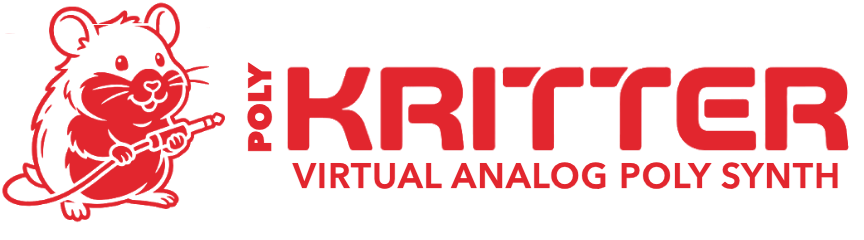

This is the web demo of the PolyKritter synth by Vulpus Labs. For more details, see vulpuslabs.com/products/polykritter.
Best in Chrome, Edge or Firefox. Safari is not supported.
Loading…
Play with the on-screen keyboard, or the computer keys A to ' (Z and X change the octave).